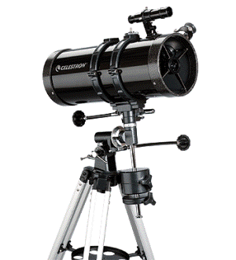
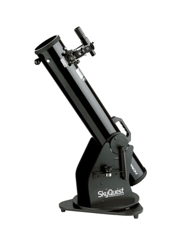
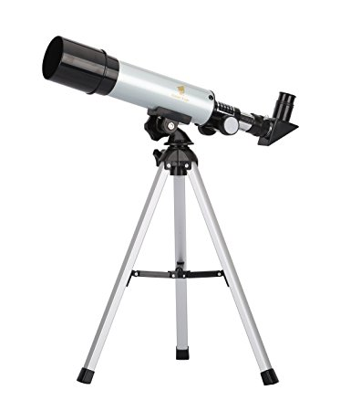
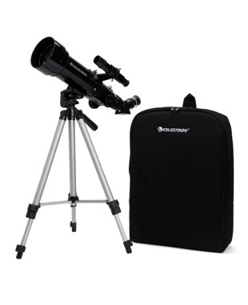
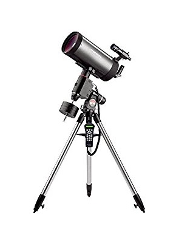
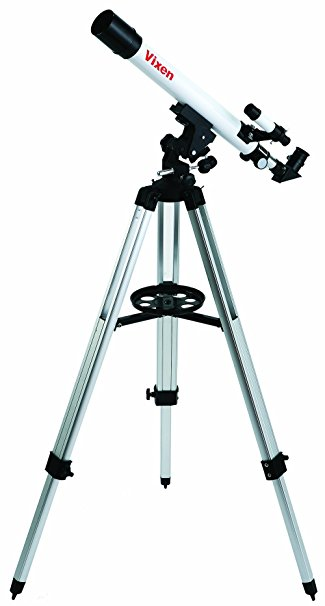
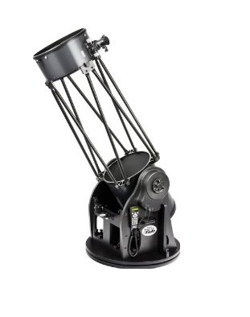
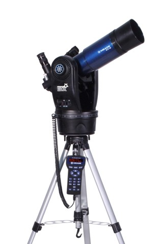
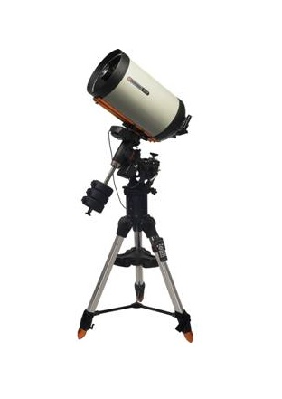

Celestron 127 EQ PowerSeeker Telescope
Estimated Price: $139.15
- Best Telescope under $200
- 3x Barlow Lens
- German Equatorial Mount
- 127mm Aperture
- 1000mm Focal Length
- Level of Difficulty: Amateur
|

Orion 10014 SkyQuest XT4.5 Classic Dobsonian Telescope
Estimated Price: $249.99
- 4.5" aperture and 900mm focal length
- Collects 260% more light than a typical beginner-level 60mm refractor telescope
- Includes two eyepieces (25mm and 10mm focal length Sirius Plossl)
- Also includes a 6x30 finder scope, 1.25" rack and pinion focuser, collimation cap,
eyepiece rack, and more
- Level of Difficulty: Intermediate
|

GEERTOP® 90X Portable Astronomical Refractor Telescope
Estimated Price: $39.99
- Magnification: 18X-90X
- Altitude-Azimuth Mounting
- High Quality optical glass lens and metal optical tube
- High powered-telescope
- Level of Difficulty: Amateur
|

Zhumell Z130 Portable Altazimuth Reflector Telescope
Estimated Price: $179.99
- 130mm portable tabletop reflector telescope offers the most light-gathering ability in the
Zhumell Portable Reflector series for stunning views.
- Parabolic mirror eliminates visual defects for brighter, sharper images
- Dobsonian-style wooden base makes pointing to and tracking celestial objects smooth and easy
- Includes two eyepieces (10mm and 25mm) and a red dot finderscope
- Level of Difficulty: Intermediate
|

Celestron 21035 70mm Travel Scope
Estimated Price: $52.79
- Best Travel Telescope
- Compact and portable design
- 20mm and 10 mm eyepieces
- High Quality optical glass lens and aluminum tripod
- Custom storage backpack
- Level of Difficulty: Amateur
|

Orion Sirius EQ-G GoTo 180mm Maksutov-Cassegrain Telescope
Estimated Price: $2299.99
- Our 16" truss-tube GoTo Dob presents a perfect combination of big-aperture optics and sophisticated, fully motorized object location technology for the ultimate in Dobsonian telescope performance and observing convenience
- Maksutov-Cassegrain telescope boasting a big 7.1" aperture and 2,700mm focal length (f/15) excels for high-power solar system use
- An ideal Maksutov-Cassegrain for high magnification study and astrophotography of compact nebulas, star clusters, as well as the Moon and planets
- The included Sirius EQ-G computerized GoTo equatorial mount provides stability for high-power photography and viewing, and can automatically locate and track over 42,000 objects after a simple alignment process
- Telescope optical tube measures only 22" long and weighs less than 16 lbs for compact portability and easy storage
- Includes 9x50 finder scope, 25mm Sirius Plossl 1.25" eyepiece, 90deg 1.25" prism star diagonal, Starry Night astronomy software, and more!
- Level of Difficulty: Advanced
|

Vixen Space Eye 50mm Telescope 32751
Estimated Price: $87.15
- Best Kid's Telescope under $100
- Includes Eyepieces, tripod and Finder Scope
- Light Gathering Power of 51x
- Weighs only 6 pounds
- Level of Difficulty: Kids
|

Orion 8968 SkyQuest XX16g GoTo Truss Tube Dobsonian Telescope
Estimated Price: $3896.90
- Our 16" truss-tube GoTo Dob presents a perfect combination of big-aperture optics and sophisticated, fully motorized object location technology for the ultimate in Dobsonian telescope performance and observing convenience
- A big, 16" aperture telescope designed for maximum portability - both the optical tube and Dobsonian base can be broken down quickly without tools into easily manageable components for convenient transport in any standard size car
- Features accurate, motorized GoTo pointing and tracking of over 42,000 celestial objects within its GoTo system database, and enough aperture for great views of each one
- Closed-loop electronics forgive accidental bumps and allow the telescope to be moved manually without losing alignment of the GoTo system. Heavy-duty clutches on both axes allow independent adjustment of motion to desired level of resistance
- Huge 16" (406mm) diameter, convex-back parabolic primary mirror with enhanced, 94% reflectivity aluminum coating delivers outstanding views of faint deep-sky objects
- Level of Difficulty: Advanced
|

Meade ETX80 Observer
Estimated Price: $349.00
- Best Computerized Telescope for Kids
- 80mm f/5 Achromat Refractor; 400mm focal length
- AudioStar handbox with over 30,000 objects in it's database & a built-in speaker
- Removable optical tube assembly (OTA), allowing the user to take the scope off of the fork mount for customization
- Includes two 1.25” Super Plössl Eyepieces: 26mm (15x magnification) and 9.7mm (41x magnification), and an internal flip-function 2x Barlow lens to double the magnifying power of each eyepiece
- Comes with a backpack that fits the telescope/mount and accessories, tripod, 45-degree roof prism, dew shield, bubble level/compass, and software DVD
- Level of Difficulty: Kids
|

Celestron EdgeHD 1400 CGE Pro Schmidt-Cassegrain Telescope
Estimated Price: $9999.99
- Celestron's 14" aperture aplanatic Schmidt-Cassegrain produces astrograph-quality flat focal plane
- EdgeHD coma-free optics and a built-in field flattener ensures sharp focus all the way to the edge of the field
- Flexible tension clutches hold the telescope mirror in place and reduce image shift when rotating the tube around the mount
- Cooling vents located on the telescope rear cell allow hot air to be released from behind the primary mirror
- All EdgeHD optical tubes are Fastar compatible for imaging down to f/2 with optional accessories
- Level of Difficulty: Expert
|